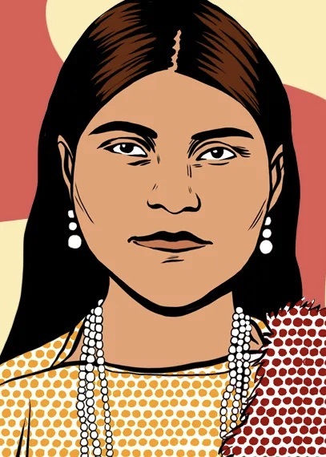
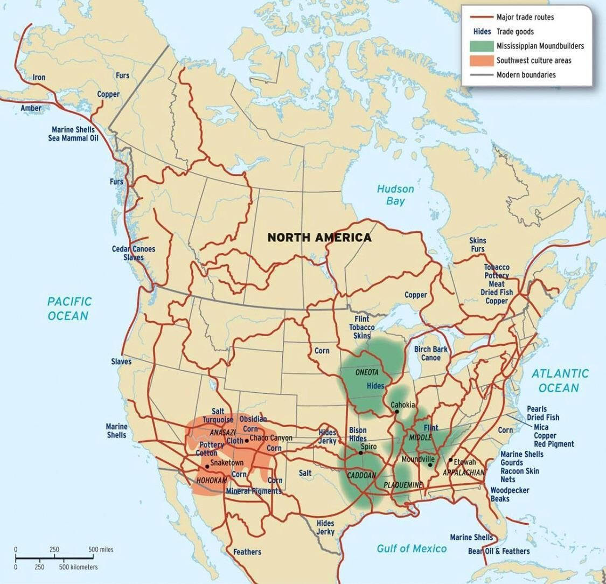
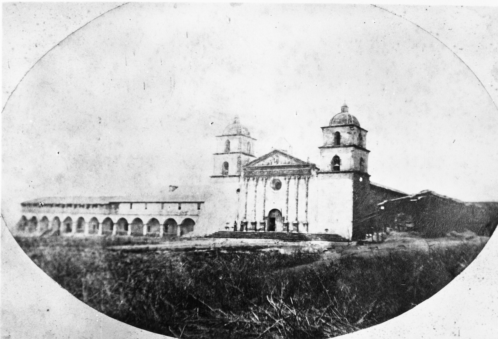
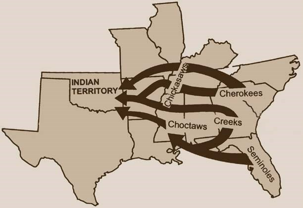
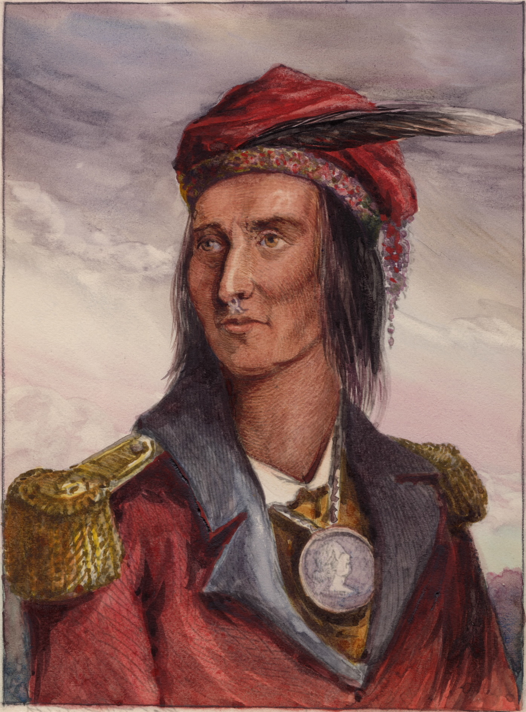
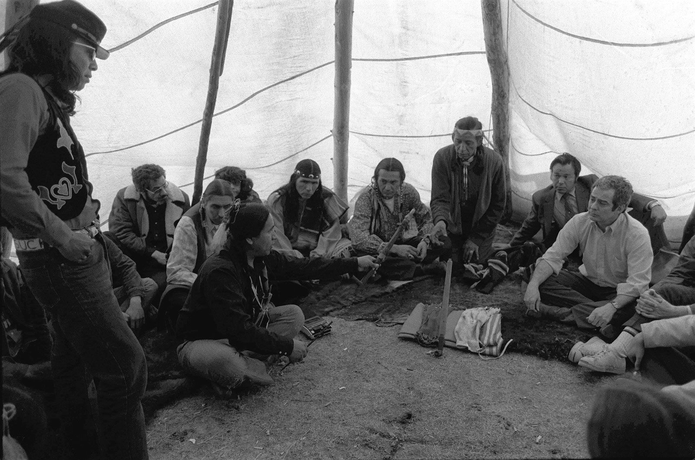
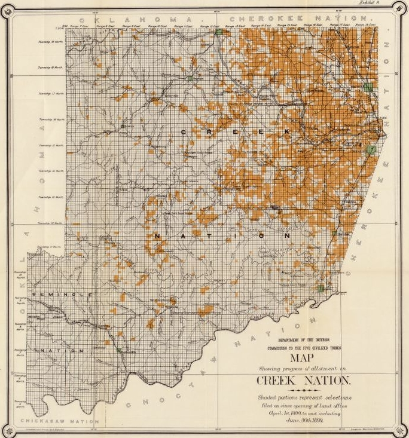
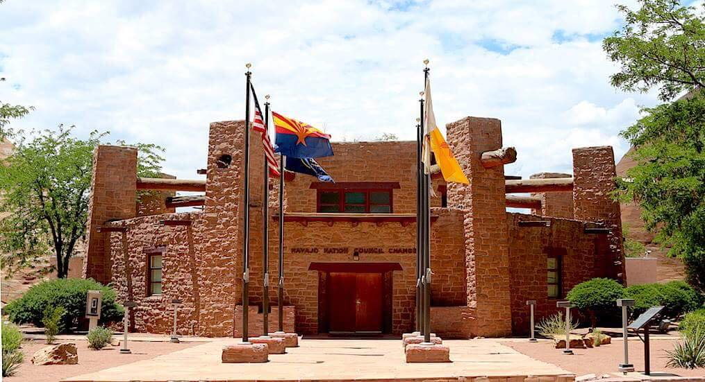
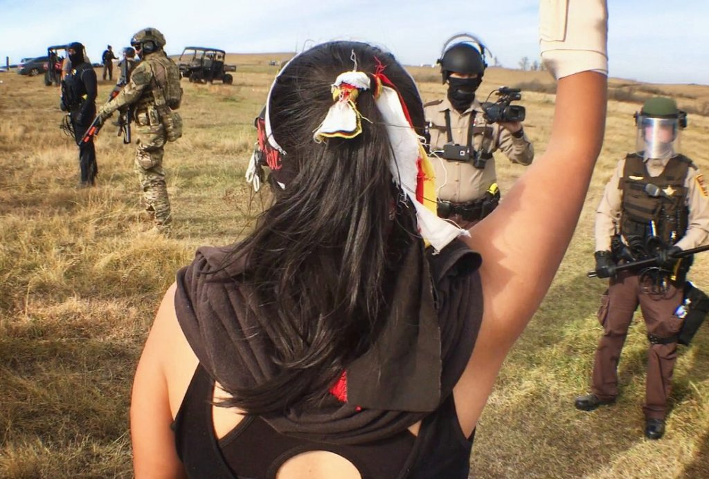

NATIVE AMERICAN PEOPLES: SOVEREIGNTY, SURVIVAL, AND PRESENCE
ESSENTIAL QUESTION
How did Indigenous peoples survive colonization, and how do they assert their sovereignty today?

Toypurina, Tongva medicine woman and resistance leader, 1780s. Source: Wikimedia Commons.
In 1785, a young woman named Toypurina helped organize a revolt against Mission San Gabriel, where Tongva people had been forced to live, labor, and give up their language and religion. She was a medicine woman, and people trusted her. She was caught, put on trial, and exiled far from her home. But she stood in front of her captors and told them exactly why she had acted. Her name was left out of most textbooks for the next 200 years.
In 1785, a young woman named Toypurina helped plan a revolt against Mission San Gabriel. Tongva people there were forced to work and give up their culture. Toypurina was a medicine woman that people trusted. She was caught and sent far away. But she spoke clearly about why she fought. Most textbooks left her out for 200 years.
BEFORE CONTACT: A WORLD ALREADY FULL

Pre-contact Indigenous trade networks across North America. Source: Wikimedia Commons.
When European explorers arrived in the Americas in the late 1400s, they did not find an empty land. They found hundreds of distinct nations, each with its own government, language, trade network, and way of life. Historians estimate that between 50 and 100 million people lived in the Americas before European contact. In what is now California alone, there were over 100 different tribes and about 300,000 people speaking more than 100 distinct languages.
When Europeans arrived in the Americas, the land was not empty. Many Native nations already lived here. Each nation had its own language, leaders, trade, and way of life. In California, more than 100 tribes lived here. People spoke more than 100 different languages.
These were not simple societies. The Haudenosaunee Confederacy, also called the Iroquois League, had a democratic constitution that influenced some American founders. The Mississippian cultures of the Southeast built cities with tens of thousands of residents. The Pueblo peoples of the Southwest built multi-story stone homes that are still standing today. California nations like the Chumash built oceangoing canoes and traded across hundreds of miles of coastline.
These societies were complex and advanced. The Haudenosaunee had a system of government that influenced some American founders. Pueblo peoples built stone homes with many floors that still stand today. Chumash people built canoes that could travel on the open ocean.
Every nation had its own relationship with the land. For many Indigenous peoples, land was not something you could own the way Europeans owned property. It was something you belonged to: something you cared for, lived with, and passed on. That difference became one of the biggest conflicts when European settlers arrived.
Native nations had deep relationships with the land. Many did not see land as something a person could buy and own. They saw land as something to care for and pass on. This idea clashed with European ideas about property.
Understanding this world matters because it pushes back against a common mistake: the idea that Indigenous peoples were primitive before Europeans arrived. The evidence says otherwise. What colonization damaged was not a simple world. It was a complex, thriving one.
This history matters because it corrects a false idea. Native peoples were not primitive before Europeans arrived. Their communities were complex and strong. Colonization harmed a world that was already full of life.
"We did not think of the great open plains, the beautiful rolling hills, and the winding streams with tangled growth as 'wild.' Only to the white man was nature a 'wilderness.'"
Luther Standing Bear (Lakota), Land of the Spotted Eagle, 1933.
Standing Bear argued that settlers misunderstood the land they were entering: and the people already living there.
In the Haudenosaunee Confederacy, women held all the political power at the local level. Only women could choose or remove the chiefs. If a chief stopped listening to his community, the women fired him on the spot. This system was already hundreds of years old when the U.S. Constitution was being written.
FAST FACTS
574FEDERALLY RECOGNIZED NATIVE NATIONS TODAY
300KNATIVE CALIFORNIANS BEFORE CONTACT
15KNATIVE CALIFORNIANS LEFT BY 1900
400+TREATIES SIGNED MOST BROKEN
WHAT COLONIZATION ACTUALLY DID

A California mission. Source: Library of Congress.
ColonizationWhen one group takes land and forces people to follow new rules. in California began in 1769 when Spanish missionaries built the first mission in southern California. Over the next 54 years, Spain built 21 missions along the California coast. The mission system forced Native Californians to live and work inside mission walls, convert to Christianity, give up their languages, and labor for no pay. People who tried to leave could be hunted down and brought back.
Colonization in California began in 1769. Spanish missionaries built the first mission in southern California. Over time, Spain built 21 missions. Native Californians were forced to work, convert to Christianity, and give up their languages. People who left could be forced back.
The results were catastrophic. Before the missions, California had about 300,000 Indigenous people. By 1900, that number had fallen to around 15,000. Disease killed many people. So did starvation, forced labor, violence, and despair. Historians call this a genocideWhen a group tries to destroy an entire people and culture. because the Native population of California dropped by about 95 percent in roughly 130 years.
The results were terrible. Before the missions, about 300,000 Indigenous people lived in California. By 1900, only about 15,000 remained. Disease, forced labor, violence, and hunger all killed people. Historians call this a genocide.
After the missions came U.S. statehood in 1850. California passed a law called the Act for the Government and Protection of Indians. Despite its name, the law allowed white settlers to declare Native children "vagrant" and force them into years of unpaid labor. It created a legal system of slavery that lasted until 1863.
California became a U.S. state in 1850. The state passed a law that claimed to protect Native people. It did the opposite. White settlers could take Native children and force them to work without pay. This system lasted until 1863.
A legal idea called the Doctrine of Discovery also made land seizure seem legitimate. In 1823, the U.S. Supreme Court ruled that European nations had gained the right to own land by "discovering" it, even when people already lived there. That idea became part of U.S. Indian law for two centuries.
The Doctrine of Discovery was another harmful idea. It said European countries could claim land just by "discovering" it. This ignored the Native peoples already living there. The U.S. used this idea in law for a long time.

Forced removal routes under the Indian Removal Act of 1830. Source: Wikimedia Commons.
The Indian Removal Act of 1830 forced tens of thousands of Native people from their homelands in the Southeast to territory west of the Mississippi River. The Cherokee called their forced march the "Trail Where They Cried." Historians know it as the Trail of Tears. About 4,000 Cherokee people died on that journey. Thousands more from other nations died on similar forced marches.
The Indian Removal Act of 1830 forced many Native people to leave their homelands. They had to move west of the Mississippi River. The Cherokee called their forced march the "Trail Where They Cried." About 4,000 Cherokee people died. Other Native nations suffered too.
The missions, the Removal Act, and the Doctrine of Discovery all treated Indigenous peoples as obstacles to be moved instead of sovereign nations with rights. That assumption shaped U.S. policy for more than a century. The consequences are still felt today in Native communities.
These policies had the same message. They treated Native peoples like problems to move out of the way. They did not treat Native nations as governments with rights. Native communities still feel the effects today.
This is also a local land story across southern California. The Kumeyaay people, whose territory crossed the region and northern Baja California, were among the first Native peoples in California to face Spanish missions. A Spanish mission was built on Kumeyaay land in 1769. The Kumeyaay burned it to the ground in 1775. That resistance was not a footnote. It was a declaration.
This history happened across southern California too. The Kumeyaay lived across the region. A mission was built on Kumeyaay land in 1769. In 1775, Kumeyaay people burned it down. That was resistance.
"Our nation was powerful. We were once a happy people. The white man seems to want to swallow us up; to make slaves of us."
Tecumseh (Shawnee), speech to Governor William Henry Harrison, August 1810.
Tecumseh spent years building alliances among Native nations to resist U.S. expansion before he was killed in battle in 1813.
RESISTANCE AND SURVIVAL ACROSS CENTURIES
Indigenous peoples never simply accepted what was done to them. At every stage of colonization and U.S. expansion, Native communities found ways to resist, adapt, organize, and survive. That is not a small detail. It is the central fact of Indigenous history in America.
Indigenous peoples did not simply accept what happened to them. Native communities resisted, adapted, organized, and survived. That is one of the most important facts in this history.

Tecumseh, Shawnee leader, ca. 1810. Source: Wikimedia Commons.

American Indian Movement at Wounded Knee, 1973. Source: Wikimedia Commons.
Tecumseh organized one of the largest Native resistance movements in history in the early 1800s. He argued that no single nation could sell land that belonged to Native peoples collectively. He traveled thousands of miles building alliances from the Great Lakes to the Gulf of Mexico. He was killed in battle in 1813, but the confederacy he built showed what organized resistance could look like.
Tecumseh organized a large Native resistance movement in the early 1800s. He said no single Native nation could sell land that belonged to many peoples. He traveled far to build alliances. He died in battle, but his work showed the power of Native unity.
In the late 1800s, as reservation life destroyed traditional ways of living, the Ghost Dance movement spread across the Plains nations. It was a spiritual practice that prophesied the return of the old world and the departure of settlers. The U.S. government was so threatened by it that soldiers were sent to stop the dances. That decision led directly to the Wounded Knee Massacre of 1890, where the U.S. Army killed about 300 Lakota men, women, and children.
In the late 1800s, the Ghost Dance spread among Plains nations. It was a spiritual dance about hope and renewal. U.S. leaders feared it. Soldiers were sent to stop it. This led to the Wounded Knee Massacre in 1890, where the U.S. Army killed about 300 Lakota people.
Resistance did not stop there. In 1968, the American Indian Movement, known as AIM, was founded in Minneapolis to fight police brutality against urban Native communities. In 1973, AIM members occupied Wounded Knee for 71 days to protest broken treatyA formal agreement between two governments. obligations and corrupt leadership backed by the federal government. The occupation made international news and forced the U.S. to negotiate.
In 1968, Native activists created the American Indian Movement, or AIM. They fought police brutality and broken treaty promises. In 1973, AIM occupied Wounded Knee for 71 days. The protest forced the U.S. government to pay attention.
Native communities also preserved their languages, ceremonies, and cultures in quiet ways. Families passed down oral traditions, maintained relationships with land, and protected knowledge until it could be reclaimed openly. Survival is also a form of resistance.
Native survival also happened quietly. Families kept languages, stories, and ceremonies alive even when it was dangerous. Survival itself became a form of resistance.

Federal records related to U.S. Indian policy, 19th–20th century. Source: Library of Congress.
Federal Indian policy shifted dramatically over the decades, and almost every shift hurt Native communities in a different way. The timeline below shows the main phases:
U.S. policy toward Native nations changed many times. Most changes harmed Native communities.
1830s
REMOVAL ERA
The Indian Removal Act forced Native nations east of the Mississippi to relocate west, breaking treaties and killing thousands on forced marches.
1887
ALLOTMENT (DAWES ACT)
The government broke up reservation land into individual parcels. Native nations lost 90 million acres in 47 years.
1930s–50s
BOARDING SCHOOLS
The federal government removed Native children from their families and sent them to schools designed to erase their languages and cultures.
1953
TERMINATION POLICY
Congress ended federal recognition for many Native nations. Tribes lost legal status, land, and services overnight.
1975
SELF-DETERMINATION ERA
Native nations gained more control over their own programs and services. This is the era we are still in today.
ART SPOTLIGHTRed Horse ledger art of the Battle of the Little Bighorn, 1881. Source: Wikimedia Commons.
Red Horse did something rare: he turned a battle usually told through U.S. Army stories into a Native eyewitness record. His drawings used simple figures, clear movement, and exact memory to show what happened from the Lakota side. It is history drawn by someone who was there, not history explained by the people who lost to him.
SOVEREIGNTY: WHAT IT MEANS RIGHT NOW

A modern tribal government building. Native nations today operate governments, courts, schools, and businesses. Source: Wikimedia Commons.
Today, 574 federally recognized Native nations exist within the borders of the United States. Each one is a sovereign government. That means they have the right to make their own laws, run their own courts, operate their own schools, and manage their own land. Self-determinationA community’s right to make its own choices. is not a gift from the U.S. government. It is a right that Native nations have always had and have been reclaiming piece by piece for decades.
Today, 574 federally recognized Native nations exist in the United States. Each one is a government. They can make laws, run courts, operate schools, and manage land. Self-determination means Native nations have the right to make their own decisions.
Tribal sovereignty shows up in ways many Americans do not notice. Tribal casinos exist because Native nations have the legal right to set some of their own laws on their land. Water rights cases in the West often involve tribal claims connected to treaties signed long ago. Native nations can negotiate directly with the federal government over land, natural resources, and education. These are not special privileges. They are surviving political rights.
Tribal sovereignty affects everyday life. Some Native nations run casinos because they can set laws on their own land. Many water rights cases involve Native treaty rights. These are political rights, not favors.
At the same time, the challenges are enormous. Native Americans face high poverty rates, underfunded health care, and serious housing problems. Missing and Murdered Indigenous Women, known as MMIW, is a crisis that receives far less attention than it deserves. These problems are connected to long histories of land theft, forced removal, broken treaties, and children being taken from families.
Native communities also face serious problems today. Many deal with poverty, poor housing, and underfunded health care. Missing and Murdered Indigenous Women is a major crisis. These problems connect to land theft, broken treaties, and forced removal.
Understanding that connection matters. Sovereignty is not only about what happened in the past. It is about who has power today, who gets heard, and who gets to decide the future of Native communities.
Sovereignty is about power today. It asks who gets heard and who gets to make decisions for Native communities.
PRIMARY SOURCE MOMENT
"We still exist. We still have our ceremonies, our languages, our land. Existence is resistance."
Winona LaDuke (Ojibwe), environmental activist and author, on Indigenous survival and land rights.
LaDuke has spent decades organizing for Native land rights, water rights, and cultural survival across the United States.
Question 1: What does LaDuke mean when she says "existence is resistance"? Use something from this lesson to explain.
Question 2: How does this quote connect to the essential question about how Indigenous peoples survived colonization and assert sovereignty today?
THEN AND NOW
NATIVE NATIONS ARE STILL HERE, AND SOVEREIGNTY STILL MEANS POWER.
1973
AIM members occupied Wounded Knee in 1973 to protest broken promises and federal policy.
TODAY

Water protectors gathered at Standing Rock in 2016 to defend land, water, and treaty rights.
The two images are more than forty years apart, but the people stand with the same purpose: protect the land, protect the water, and make the country look directly at Native power.